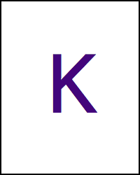
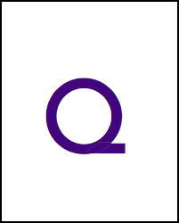
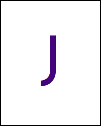
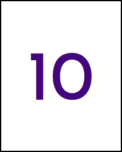

We want to be a family of misfits, of those who felt like imposters trying to fit in but are
really just waiting for their moment to shine with all the might of their fierce personality.
We want voiceover artists to own their voices and help each other up to succeed as an Ace Talent.
That’s why we are inclined to represent BAME, LGBTQI+, people with stories from different walks of life,
and those who find it tough getting into any high barrier of entry industries that require university
degrees or previous experience.

Ace Training – Sweat, baby, sweat!
We offer ongoing training and professional showreels from notablevoices.co.uk and we give you hints
and tips every step of the way with regular support. We want to push our talent to reach for the stars
with our bespoke training to make sure they’re at the right calibre for any project.

Let’s hustle – in our home castles!
We want people who are serious about being a professional voiceover artist.
With hard work training your voice, it’s possible to be an Ace Talent as ongoing side hustle
for those who have jobs elsewhere. Best part is that you can do voiceover work from the comfort of your home.

We are one and the same
We are made up of millenials that a) have no clue about what to do after finishing school,
b) have come from different countries, and c) are young and ambitious with no where to channel it.
We hear you! And want to help you up from there. Don’t feel like you have to already be a
professional in another lifetime to make it here.

Informal but hardworking
We like chatting in a relaxed way to make you feel at ease and enjoy the process of being a
voiceover artist but work is still work at the end of the day and we want to make sure you do the
best you can for us to raise you up!
If you’re interested in having us represent you, send us an email and take a look at our FAQs down below.